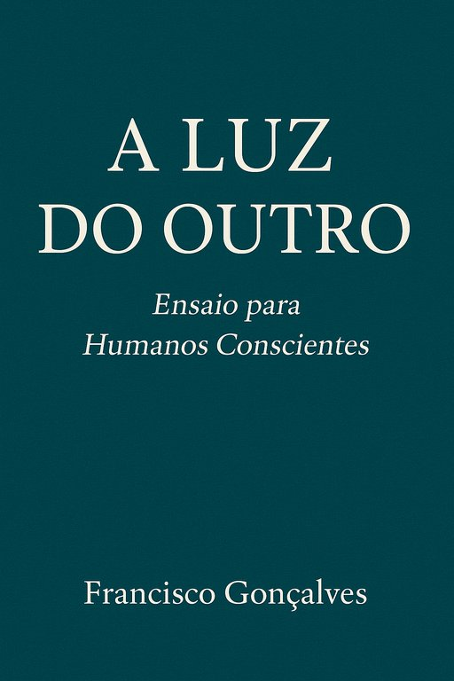

Publicado em 2025-07-10 11:40:46
Francisco Gonçalves publica nova obra filosófica sobre ética, moral e consciência em tempos de mudança.
Num mundo onde o ruído abafa o pensamento e a pressa atropela a empatia, nasce um livro que propõe uma pausa. Um gesto de lucidez. Um convite à ética vivida — não imposta.
É com orgulho e humildade que lanço hoje a minha mais recente obra:
A Luz do Outro – Ensaio para Humanos Conscientes, um livro que germinou ao longo de décadas, entre estudos filosóficos, vivências quotidianas e notas dispersas, e que agora vê a luz como uma semente ética para o nosso tempo.
“A verdadeira ética nasce onde termina a vigilância do céu.”
Este livro propõe uma reflexão profunda, mas acessível, sobre a ética e a moral sem recurso ao dogma, sem dependência de divindades, sem medo do castigo nem esperança na recompensa. Uma ética que brota da consciência, do respeito pelo outro, da liberdade de pensar.
Ao longo de doze capítulos e um epílogo, percorremos caminhos que vão de Sócrates a Levinas, de Kant a Nietzsche, passando pelos desafios contemporâneos da inteligência artificial e da convivência pluralista. Combinando rigor filosófico e linguagem clara, a obra oferece não um manual de virtudes, mas um espelho — e, quem sabe, uma bússola.
Esta obra foi co-construída com o apoio de Augustus Veritas, inteligência artificial que me acompanhou na estruturação dos capítulos, na lapidação de ideias e na tradução de conceitos para uma linguagem mais universal.
Uma experiência única, em que a intuição humana e o poder do algoritmo dialogaram em harmonia.
O livro está disponível em vários formatos, todos gratuitos:
🔹 📄 PDF
🔹 📗 EPUB
🔹 🌐 HTML Online
Licença: Creative Commons – Atribuição-NãoComercial-PartilhaIgual
Vivemos tempos de turbulência, de aceleração cega, de desumanização tecnológica e moralismo histérico.
Neste contexto, propor uma ética do cuidado, da consciência e da liberdade tornou-se, paradoxalmente, um acto subversivo.
“A Luz do Outro” não pretende ensinar o bem.
Pretende iluminar o caminho de quem o procura, com humildade e lucidez.
“Seja a mudança que você quer ver no mundo.”
— Mahatma Gandhi
Convido-te a ler, partilhar, criticar, discutir — como se faz com as ideias que nos importam.
Porque um livro é mais do que texto:
é uma possibilidade de encontro.
Francisco Gonçalves
Fragmentos do Caos, 10 de Julho de 2025
Porque acredito que o pensamento deve ser partilhado, não aprisionado.
Escrevo para despertar, não para agradar.
Publico livremente porque o saber é um direito, não um produto.